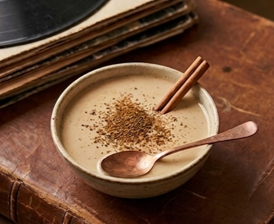
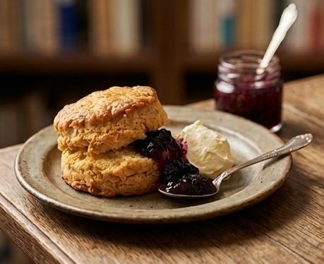
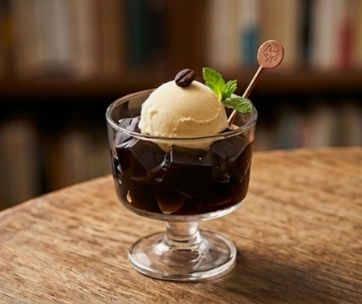
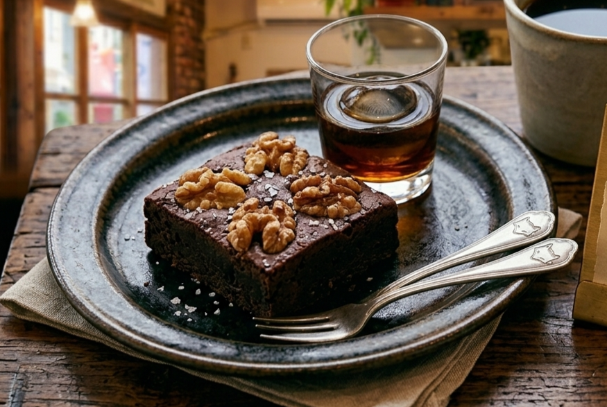
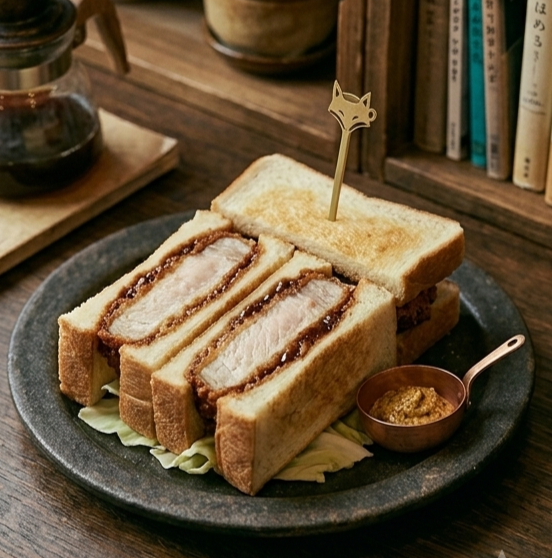

コーヒーとお茶（Coffee & Tea）
きつねブレンド（深煎り）
¥550
毎日店内で自家焙煎している、コクと香りのバランスを追求した看板珈琲。
季節のシングルオリジン（浅煎り）
¥600
すっきりとしたフルーティーな酸味と、朝の光にぴったりな爽やかな後味が楽しめる一杯。
自家製キャラメルラテ
¥650
じっくり焦がしたほろ苦いキャラメルソースと、濃厚なミルクが溶け合う優しい甘さのラテ。
ほうじ茶クラシックラテ
¥550
丁寧に焙じた国産ほうじ茶の香ばしさを引き立て、ミルクでまろやかに仕上げた一杯。

瀬戸内レモンと生姜の和紅茶
¥600
甘酸っぱいレモンとピリッとした生姜が体を温める、すっきりとした味わいのフレーバーティー。
昼の甘味（Afternoon Sweets）

季節の自家製スコーン（自家製ジャム＆ホイップ付き）
¥450
外はサクサク、中はしっとりと焼き上げた自慢のスコーン。季節のジャムと軽やかなホイップを添えて。

ほろ苦珈琲ゼリーのミニカップ
¥600
自家焙煎豆を使用した濃厚な珈琲ゼリーに、冷たいバニラアイスを乗せたシンプルなミニデザート。

濃厚チョコレートブラウニー
¥600
しっとり濃厚なブラウニー。昼は深煎りの「きつねブレンド」と一緒に、贅沢な読書時間をお過ごしください。
軽食（Light Meal）

きつねの気まぐれカツサンド
¥850
ジューシーなカツを挟んだ少し贅沢な軽食。お気に入りの一冊と共にお楽しみください。